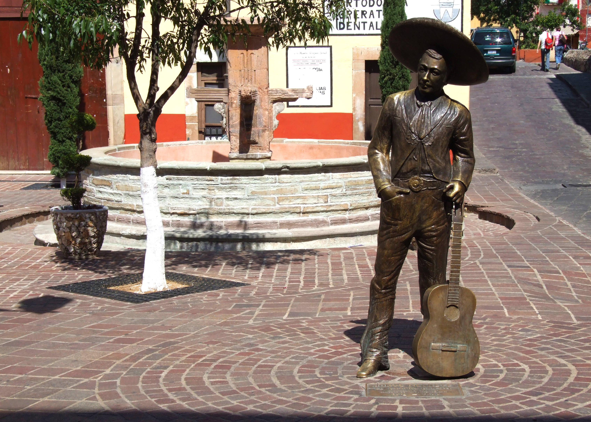
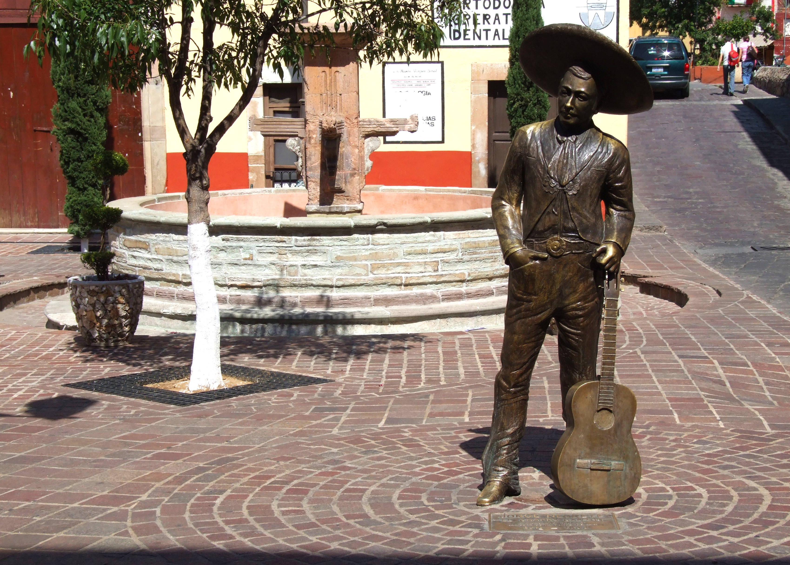
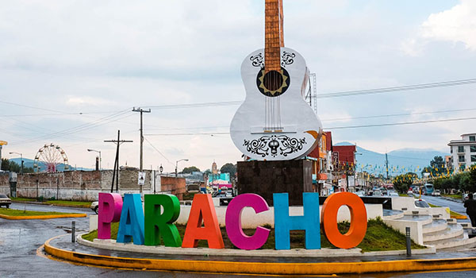
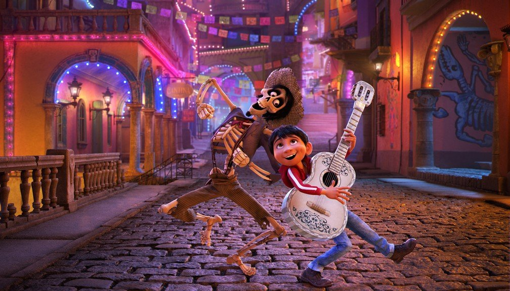
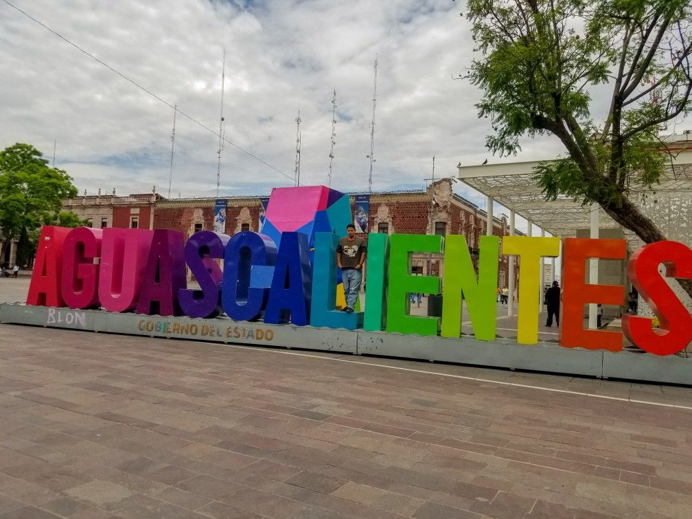

Guanajuato
O México é uma terra de encantos mil.
Seja por suas exuberantes praias, sua arqueologia milenar ou pela cultura rica e alegre, o destino já é queridinho entre os brasileiros. Mas isso não significa que já conhecemos tudo por lá.
Guanajuato, por exemplo, é um lugar recheado de atrações e ainda pouco visitado por nós.
O estado de Guanajuato guarda nada menos do que dois Patrimônios Mundiais da UNESCO, além de Povoados Mágicos e rotas incríveis como a do Vinho e da Tequila.
A capital homônima do estado é um dos Patrimônios da Humanidade. Encantadora, a cidade da época colonial está situada num pitoresco vale, rodeado pelas montanhas da Serra de Guanajuato.

Pontos Turísticos
O estado de Guanajuato guarda nada menos do que dois Patrimônios Mundiais da UNESCO, além de Povoados Mágicos e rotas incríveis como a do Vinho e da Tequila. A capital homônima do estado é um dos Patrimônios da Humanidade.
Encantadora, a cidade da época colonial está situada num pitoresco vale, rodeado pelas montanhas da Serra de Guanajuato.
Perfeita para ser explorada a pé, a cidade guarda uma atração bastante curiosa. Uma extraordinária rede de caminhos subterrâneos corre debaixo de suas ruas. Isso porque o lugar foi todo alagado há muitos anos e teve que ser totalmente reconstruído.
Os túneis são acessíveis de carro ou a pé e levam aos principais pontos da cidade.
Entre os destaques para visitar na cidade está o Teatro Juarez, a Represa de la Olla, o mercado Hidalgo – perfeito para compras de artesanato e comidas típicas -, a histórica Alhondiga de Granaditas e o curioso Beco do Beijo. Esse último faz parte de uma das muitas lendas do destino. O estreito lugar permite que os casais se beijem estando em varandas opostas.
A fama de casar os turistas que passam por ali é grande!

Como chegar
Distante cerca de 360 quilômetros da Cidade do México, o destino está no chamado coração do país e é facilmente acessado de carro ou em um voo de pouco mais de 30 minutos.Onde comer
Guanajuato é um lugar ideal para degustar a cozinha regional de El Bajío. Entre os pratos locais preferidos são destaque: as enchiladas mineiras (tortilhas recheadas de carne, feijão ou queijo, e cobertas com um molho de chile guajillo e chile largo) e as pacholas guanajuatenses (carne moída com especiárias).Onde ficar
Há diversos hotéis-boutique com spas na cidade. Eles são famosos por lá por realizarem o Temazcal – um banho,
tido como um ritual de purificação da alma.
Entre os destaques na hospedagem estão:
- Alonso 10 – hotelalonso10.com.mx
- Villa Maria Cristina – villamariacristina.net
- Hotel Quinta Las Acacias – quintalasacacias.com
Informações turísticas: guanajuato.com.br

Plaza Del Ropero
Aqui vale uma foto com a estátua do famoso músico Jorge Negrette, que inspirou a criação
do meu ídolo, o Ernesto de la Cruz.
Em 2005, uma estátua de bronze em tamanho natural do ícone foi inaugurada,
A estátua é obra do guanajuatense Raul Jaramillo e foi inaugurada pelo governador Juan Carlos Romero Hicks.
Chegando lá: Cantarranas s/n, Centro, Guanajuato, 36000
 

Hospedagem
Casa Florencia
Conde de Valenciana No. 117, Barrio de La Presa, Guanajuato, 36094.
(473) 688 0477
$103 - $274
Mesón de La Fragua
Tepetapa 46, Centro, Guanajuato, 36000.
(473) 732 2715
$33 - $50
Real Guanajuato
Positos 39, Centro, Guanajuato, 36000.
(473) 732 9650
$40 - $67
Restaurantes
Costal Cultura Cafetera
Calle San Jose 4 Zona Centro, Guanajuato 36000 Mexico
+52 473 102 7252
Site do Costal
Segunda à Sábado das 14h às 22h, Domingo das 14h à 21h
Casa Mercedes
Calle de Arriba No. 6 San Javier, Guanajuato 36240 Mexico
+52 473 733 9059
Site do Mercedes
Terça à Sabado 14h às 22h, Domingo 14h às 18h
La Taberna de Diego y Frida
35 Positos Bajos Positos 35 Bajos, Guanajuato 3600 Mexico
+52 473 733 1036
Site do Taberna
Quinta à Sábado 14h 23h30, Domingo das 14h às 20h, Segunda das 14h às 21h
Paracho de Michoacán

Conhecida como Cidade dos Violões, inspirou o brilhante design do meu violão. A vila de Paracho é famosa pela produção artesanal das melhores guitarras do mundo, não só pela sua tradição centenária de artesanato transmitida de geração em geração, mas também pelo material que utilizam para as elaborar: a madeira de cedro. O museu da guitarra mostra uma amostra das melhores obras dos artesãos locais, bem como uma exposição sobre a história dos primeiros fabricantes de violões. Um festival nacional "Feria de La Guitarra" é realizado em Paracho uma vez por ano, geralmente na segunda semana de agosto. Com duração de nove dias tendo sua mostra de cultura, gastronomia e tradições.
Pontos Turísticos
Praça
A praça é o ponto de encontro dos artesãos, que se reúnem todos os fins de semana vestidos com trajes tradicionais para encantar os turistas e vender suas criações, incluindo, é claro, os renomados violões artesanais da cidade.
Chegando la: 20 de novembro s / n, Col. Centro. 60250 Paracho de Verduzco, Paracho
Mercado municipal
O mercado municipal é uma visita obrigatória se quiser experimentar os pratos mais tradicionais do Paracho. É aqui que os habitantes locais compram os ingredientes mais frescos para preparar as suas refeições.
Chegando la: 20 de novembro s / n, Col. Centro. 60250 Paracho de Verduzco, Paracho
Centro cultural
No Centro Cultural do Paracho você encontra mostras culturais, além de peças de importantes eventos da cidade do Paracho, como o Concurso de Brinquedos Populares e os Concursos de Construtores de Guitarras.
Chegando la: Francisco de Castro s / n, Col. Centro. 60250 Paracho de Verduzco, Paracho
+52 (423) 525 0077
Horario: Segunda a Sabado 08h00-18h00
Domingo Fechado
Capela da Imaculada Conceição de Paracho
Esta capela data do século XVI. O seu interior alberga retábulos, pinturas e um coro de grande valor histórico e beleza ímpar. O local foi restaurado pelo Instituto Nacional de Antropologia e História (INAH, por sua sigla em espanhol) com a ajuda de várias contribuições econômicas. Ele está localizado no Huatápera.
Chegando la: Lic. Eduardo Ruiz s / n, Col. Centro. 60250 Paracho de Verduzco, Paracho
Hospedagem
Hotel Santa Fe Paracho
Site do Hotel Santa Fe
+52 (423) 525 0185
From $400 MXN - 3 estrelas
Av. 20 de Noviembre #791, Col. Centro. 60250 Paracho de Verduzco, Paracho
Paracho Hotel and Inn
Site do Hotel Paracho
+52 (423) 525 1914
From $300 MXN
Morelos #5, Col. Centro. 60250 Paracho de Verduzco, Paracho
Restaurantes
Ánima Pinta
Calle Licenciado Eduardo Ruiz 39, Paracho 60250 México
+52 452 113 0311
Horário de funcionamento: todo dia 5:00 PM - 9:00 PM
COZINHA: Mexicana
Site do Ánima
Aguascalientes - Isla San Marcos e o Festival de Calaveras
O Festival Cultural de Calaveras, também conhecido como Feira de Calaveras, é um dos eventos tradicionais mais importantes do Estado de Aguascalientes. Sendo realizado na última semana de outubro e na primeira semana de novembro (durante 7 dias) desde 1994, este grande evento tem um forte caráter festivo, com muita música e pirotecnia. É caracterizado também pela colocação das “Tianguis de las Calaveras” (feiras livres), que foram originalmente colocadas nas ruas que circundam os panteões de Los Angeles e Cruz de los Cruz, sendo que atualmente esses tianguis estão situados nos fundos dos referidos cemitérios, precisamente na avenida Arrollo de los Arellano e nas instalações da Ilha San Marcos.
Em cada uma das edições mais atuais, o festival realizou quase 280 eventos. Se destacam: passeios pelo Centro Histórico e panteões, variedade de eventos musicais, peças teatrais, concursos de desenho, gravuras e fotografias, apresentações de grupos de dança, exposições de altares dos mortos acompanhados de caveiras literárias bem-humoradas, eventos esportivos nacionais e internacionais, exposições de pinturas e artesanatos relacionados ao "Día de los Muertos", pavilhões da gastronomia tradicional, a colheita da uva, o famoso “altar vivo” entre muitas outras opções de entretenimento. Uma atividade específica é uma caminhada noturna “Acenda seus pés até os mortos”, realizada no Cerro del Picacho, no sopé do Cerro del Muerto. O que coroa este grande festival é o Desfile dos Crânios, no qual podem ser admiradas inúmeras alusões aos mortos, e a que finalmente chega ao altar dos mortos vivos.


Sem dúvidas, o "Día de los Muertos" é o feriado mais importante do México. As comemorações começam entre os dias 25 e 28 de outubro e acabam entre 2 e 3 de novembro. Ah! E as festas começam a partir do meio-dia e vão até tarde da noite.
Datas simbólicas de cada um dos dias:
28 de outubro – Os altares e as honras vão para aqueles que morreram devido à acidentes ou os que morreram repentinamente ou por violência.
29 de outubro – As famílias homenageiam aqueles que se afogaram.
30 de outubro – As pessoas lembram das almas perdidas, os solitários e esquecidos, como criminosos e orfãos.
31 de outubro – As famílias lembram daqueles que nunca nasceram ou crianças pequenas que não foram batizadas.
1 de novembro – As famílias honram as crianças, a quem se referem como “angelitos”.
2 de novembro – Nesse dia todos os adultos falecidos são homenageados.
Hospedagem
Aguascalientes Marriott Hotel
Boulevard Zacatecas Norte Col Trojes de Alonso, Aguascalientes 20116
+52 844-631-0595
Site do Marriott
Quinta Real Aguascalientes
Avenida Aguascalientes Sur No 601 Jardines de la Asunción, Aguascalientes 20270
+52 800-500-4000
Site do Quinta Real
Hilton Garden Inn Aguascalientes
Blvd. Luis Donaldo Colosio 404 Valle de Las Trojes, Aguascalientes 20115
+52 449-478-1700
Site do Hilton Garden
Restaurantes
Messicana
Avenida Francisco I. Madero # 513. Zona Centro - Segundo piso, Aguascalientes 20000
+52 449-331-9787
Horário de Funcionamento:
Dom - 9:00 am - 06:00pm
Seg à Sáb - 09:00am - 11:45pm
COZINHA: Mexicana, Saudável, Italiana, Pizza, Grelhados, Fusion
La Mestiza
2,9km de Isla San Marcos, Abasolo 113, Aguascalientes
+52 449-159-302
Horário de Funcionamento:
Dom à Seg - 08:00am - 2:00pm
COZINHA: Mexicana, Latina
Faixa de preço: R$ 13 - R$ 49
Terrazza Italiana
0,8km de Isla San Marcos, Av. de los Maestros C.C. Velaria Mall, Local 42, Aguascalientes 20210 México
+52 449-250-0536
Horário de Funcionamento:
Dom - 11:00 am - 11:30pm
Seg à Sáb - 10:00am - 11:00pm
COZINHA: Mexicana, Latina, Italiana
Faixa de preço: R$ 19 - R$ 167